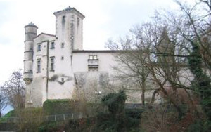
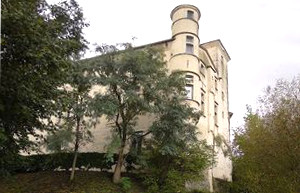
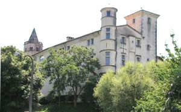
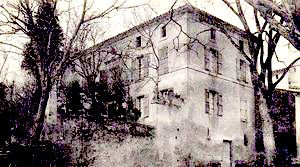
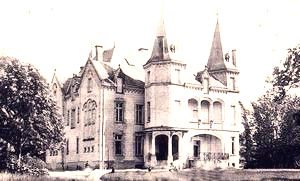
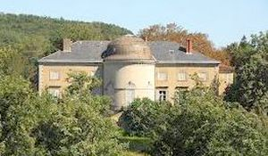

Recensement Jean-Claude Truffet
| Département | 81 — Tarn |
| Canton | Labruguière |
| Commune | Labruguière |
| Type d'édifice | Château |
| Période d'origine | XVI-XIX |






Quatre châteaux à Labruguière dit de Cardaillac du XVI-XVIIe siècle, de Hauterive (voir article), manoir des Causses et de GaÏx du XIXe siècle à Valdurenque. LABRUGUIERE, CARDAILLAC, un château fort est bâti au Xe siècle, servant de noyau à un village. Durant les guerres de religion, Labruguière est pris par Guillot de Ferrières, seigneur protestant local et fait soumission à Henri IV en 1591. Restauré fin XVIe siècle, début XVIIe siècle, le château actuel du XVIIe siècle construit par Louis de Cardaillac le château occupait une partie des remparts. La seigneurie passe par plusieurs familles et donne lieu à un procès intenté par le marquis du Lac en 1749, le château et la seigneurie de Labruguière passent aux mains de Joseph Dulac qui obtient de l'ériger en marquisat en 1757, La Bruguière prend alors le nom de Dulac. Pendant près de trente ans, le marquis Dulac, père, cherche à imposer aux habitants de Labruguière des droits seigneuriaux en supprimant les anciens privilèges et franchises. Il perd ses procès et la cour des aides de Montpellier le condamne même à rembourser les habitants. Ayant supprimé les privilèges, il réclamait son dû aux habitants. Un drapier persévérant, Bernard Dougalos, finit par avoir gain de cause en 1777 et le marquis doit remboursé les impôts indûment perçus pendant vingt neuf ans. GAÏX à Valdurenque que nous pouvons admirer aujourd'hui est une splendide construction qui ne doit pas faire oublier le vieux château médiéval qui, jusqu'au début du XIXe siècle, fut le symbole d'une puissante seigneurie: le château de Geccaco (Gaïx) est mentionné dès 1035. Philippe de Montfort attribua la seigneurie de Gaïx ainsi que ses dépendances à Jean de Burlats le Vieux, aujourd'hui propriété du baron de Blay de Gaïx.
Labruguière-Cardaillac, le château actuel du XVIIe siècle est une véritable forteresse par son emplacement est érigé à lextrémité du plateau surélevé, le logis est un long rectangle à la façade légèrement arrondie. Les fenêtres à meneaux sont régulièrement espacées sur deux étages et des lucarnes sous la corniche du toit. Corps de logis à trois niveaux, les corbeaux qui la soutiennent donnent lieu à un décor sculpté daccompagnement à l'opposée une tour carrée. Une tourelle dangle en encorbellement occupe langle du corps de bâtiment principal, les corbeaux qui la soutiennent donnent lieu à un décor sculpté daccompagnement. Une petite tour ronde en encorbellement qui prend corps au premier étage et dépasse la toiture d'un étage. Une tour carrée est intégrée au mur pignon et surplombe la toiture en ardoise. La récente restauration donne un air neuf un peu artificiel à l'ensemble. Gaïx, la demeure présente une façade de villa italienne, un corps de bâtiment à neuf travées au milieu duquel un avant-corps en hémicycle abritant un salon crée une noble animation et une division tripartite de la façade, les trois travées de la rotondes étant flanquée du même nombre de travées sur les ailes de la façade. Coiffée d'une toiture en dôme, la rotonde est de la même hauteur que le logis. Il comporte un rez-de-chaussée surmonté d'un étage de lucarnes carrées, donnant aux travées une noble ordonnance. Les fenêtres ont été remplacées sur la rotonde par de belles portes fenêtres ouvrant sur le perron auquel mène l'escalier à double volée, cette simplicité confère à l'avant corps une noblesse accrue et accentue l'aspect néo-classique de cette noble demeure.
Famille de Guillot de Ferrières Famille de Louis de Cardaillac Baron de Blay de Gaïx
"
Château de Labruguière dit de Cardaillac, de Gaix,du Bessous et de Causse.